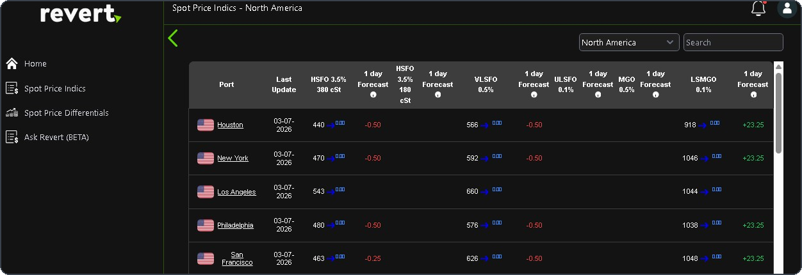
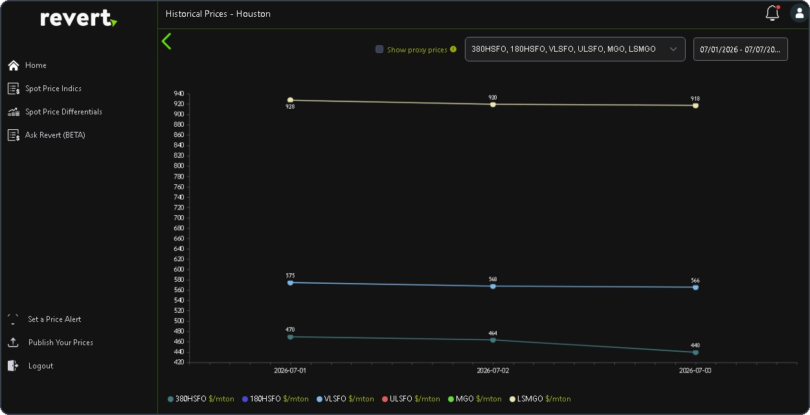
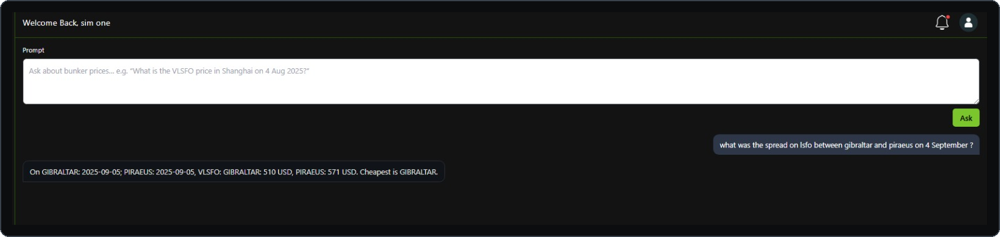

Why Revert
Bunkers are one of the largest cost items on any voyage, yet the people making stemming decisions often work from scattered sources: broker emails, supplier quotes and paid indices spread across platforms. Revert grew out of that daily friction. The idea is simple — one place to see where prices stand, where they are heading, and what the spread looks like between the ports you are actually choosing between.
What it does
The home screen breaks the world into bunkering regions. Drilling into a region gives a port-by-port table of spot indications across the main fuel grades — HSFO 380 cSt and 180 cSt, VLSFO 0.5%, ULSFO 0.1%, MGO and LSMGO — each with a one-day forecast so a rising or softening market is visible at a glance.

Every port opens into a historical view, charting each grade over a selected date range — useful for timing a stem or sanity-checking a quote against how the port has actually been trading.

Alongside the tables and charts sit price differentials across ports and products, configurable price alerts, and a channel for suppliers to publish their own prices into the platform.
Ask Revert
The newest addition is Ask Revert, a natural-language interface to the same data. Instead of navigating tables, you ask the question the way you would ask a colleague — and get a direct answer with the numbers behind it.

The project is in active development, with the assistant currently in beta. It reflects the thread running through my work: operational shipping knowledge, applied through software.